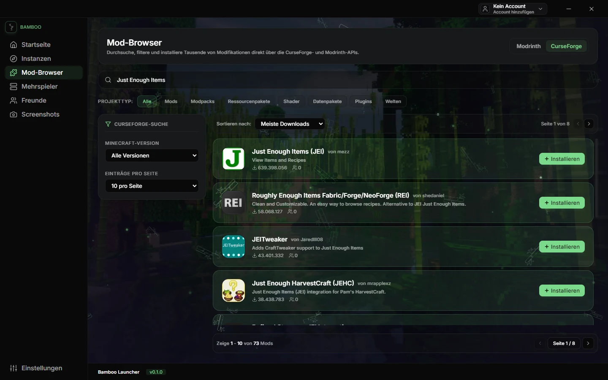
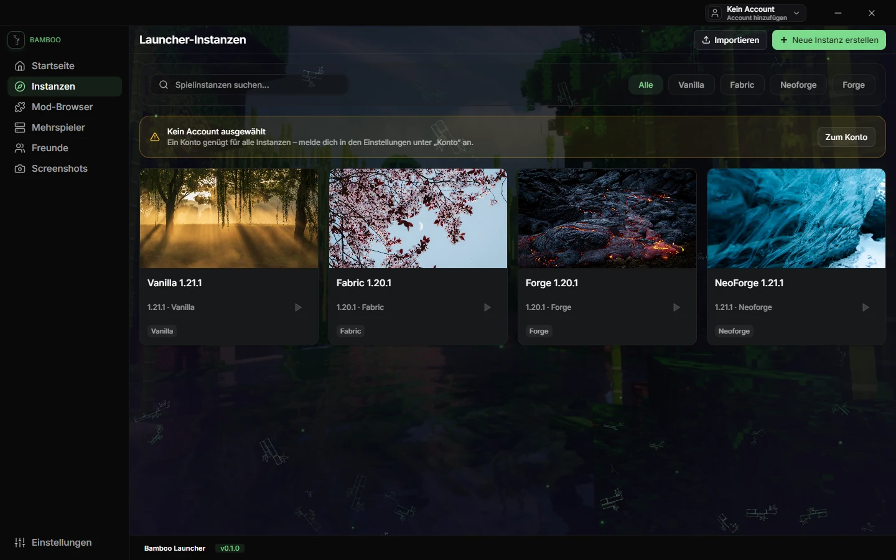
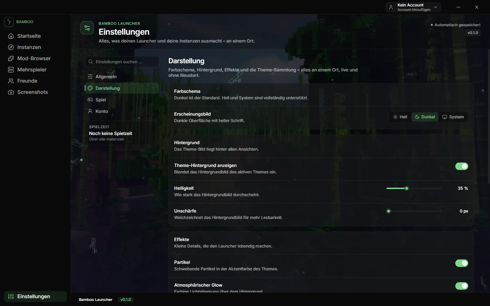
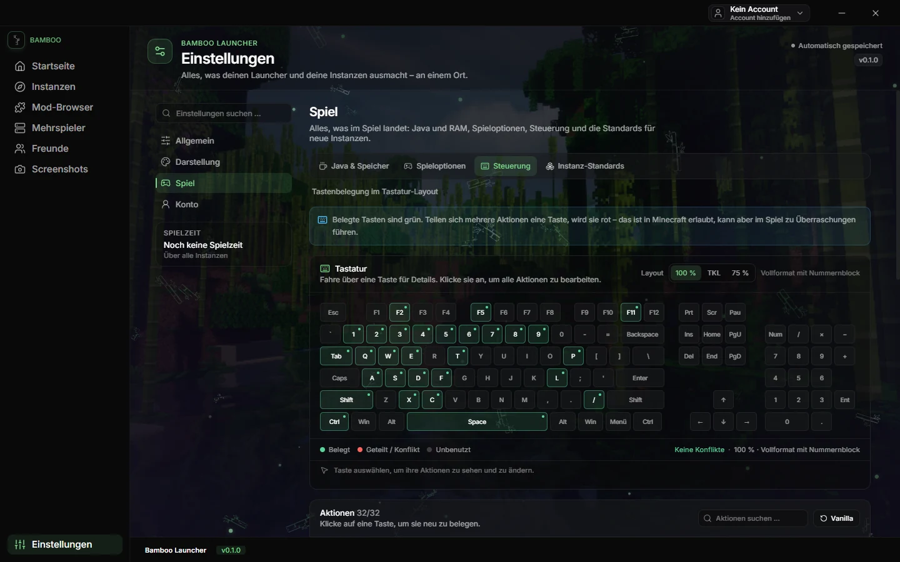

Minecraft: Java Edition
Minecraft starten.Nicht verwalten.
Bamboo bündelt Instanzen, Mods, Java und Einstellungen in einer ruhigen Oberfläche. Vier Bereiche, ein Ort – und nichts, was du erst suchen musst.

01 / Instanzen
Jede Instanz bleibt ihre eigene Welt.
Vanilla, Fabric, Forge oder NeoForge: Du entscheidest pro Instanz, welche Version läuft, wie viel RAM sie bekommt und mit welchem Java sie startet.

Getrennt, wo es zählt.
- LoaderVanilla, Fabric, Forge und NeoForge – pro Instanz ausgewählt.
- RessourcenEigener RAM, eigenes Java und eigene JVM-Argumente.
- StartFenstergröße, Vollbild und letzter Start werden pro Instanz gespeichert.
- AufräumenLöschen mit Bestätigung; Export als Modrinth-Pack oder ZIP.
- Crash-LogsDie Log-Analyse erkennt bekannte Fehler und schlägt konkrete Korrekturen vor.
Die Aufnahme zeigt vier Demo-Profile in einer isolierten Testumgebung – die Oberfläche ist die echte App.
02 / Mods
Suchen, filtern, installieren.
Der Mod-Browser spricht direkt mit CurseForge und Modrinth. Du suchst, filterst nach Spielversion und Kategorie und installierst in die Instanz, die es braucht.
Zwei Datenbanken, eine Oberfläche.
CurseForge und Modrinth liefern Suchergebnisse, Versionen und Dateien. Bamboo zeigt beide Quellen im selben Browser – mit Projekttyp, Kategorie, Minecraft-Version und Sortierung.
Die Installation landet in der gewählten Instanz – Mods in mods,
Ressourcenpakete und Shader in ihren eigenen Ordnern. Metadaten und Hashes werden
genutzt, soweit die APIs sie bereitstellen.
Der Screenshot im Kopfbereich ist eine echte CurseForge-Antwort auf die Suche nach „Just Enough Items“.
Quelle 01
CurseForge
Mods, Modpacks, Ressourcenpakete, Shader, Datenpakete und Welten – durchsuchbar über die offizielle API.
Quelle 02
Modrinth
Mods, Modpacks, Ressourcenpakete, Shader, Datenpakete und Plugins, gefiltert nach Version und Loader.
Ablauf
In die Instanz, nicht in einen Sammelordner.
Die gewählte Datei wird heruntergeladen und der Instanz zugeordnet. Die Verwaltung bleibt dort, wo das Spiel läuft.
03 / Einstellungen
Vier Bereiche. Nichts versteckt.
Die Einstellungen sind nach Aufgaben sortiert, nicht nach technischen Modulen. Sprache, Themes, Spieloptionen und Konto liegen dort, wo man sie erwartet.

Nach Aufgabe sortiert.
Änderungen werden automatisch gespeichert – und beim Schließen vor dem Beenden geschrieben, damit auch die letzte Änderung bleibt.
04 / Steuerung
Die Tastatur ist Teil der Oberfläche.
Die 32 Aktionen stehen in einer Liste; das Tastaturdiagramm zeigt, wo die belegten Tasten des gewählten Layouts liegen. Belegte Tasten sind grün, Konflikte rot – und das Layout lässt sich an die eigene Tastatur anpassen.

Die Belegung wird beim Anlegen einer Instanz einmalig in ihre options.txt geschrieben.
Beim Anlegen und beim Start bleibt eine vorhandene options.txt unverändert; spätere
Änderungen in den Instanz-Einstellungen schreiben nur die geänderten Schlüssel.
05 / Download
Ein Build. Noch kein öffentlicher Link.
0.2.0 ist die einzige gebaute Version. Der Installer liegt als Windows-Paket vor; ein öffentlich erreichbarer Ablageort fehlt noch. Deshalb steht hier kein Button, der ins Leere führt – sondern der tatsächliche Stand des Artefakts.
Bamboo Launcher Setup 0.2.0.exe
Ein NSIS-Installer mit wählbarem Installationsordner, Desktop- und Startmenü-Verknüpfung. Gebaut am 29. Oktober 2026. Es gibt keine älteren Releases, keine Beta-Kanäle und keine automatischen Updates.
- Datei
Bamboo Launcher Setup 0.2.0.exe- Größe
- 107.109.300 Bytes · 102,1 MiB
- Build
- 29. Oktober 2026 · 20:26 CET
- SHA-512
0251828955b02f343e4365619c7e339f9dda968fc34194edfceab09025ebad90b027f1d2d72612659400781c90224f19984ee82670a189b16dbef18abb3984f5- Weitere Versionen
- Keine. 0.2.0 ist der erste und einzige Build.
- Status
- Lokal gebaut · nicht veröffentlicht